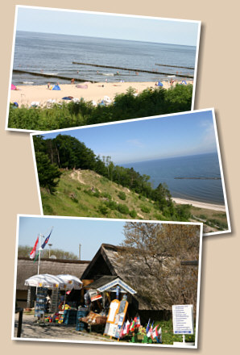

|  |
Ostseebad KoserowDas Ostseebad Koserow gehört zum Verbund der Usedomer Bernsteinbäder. Es liegt im der Mitte und zugleich an der schmalsten Stelle der Insel Usedom. Hier sind beste Voraussetzungen für eine naturverbundene Entspannung und Erholung gegeben. Neben der Ostsee mit ihrem feinsandigen Strand finden Sie im geschützten Bereich des Streckelsberges, der höchsten Erhebung der Insel, 200 Jahre alte Buchenwälder. Am Achterwasser können Sie durch nahezu unberührte Wiesen wandern. Die Koserower Salzhütten, das Otto-Niemeyer-Holstein-Gedenkatelier und viele Gaststätten laden zu einem Besuch ein. |